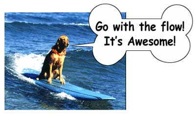
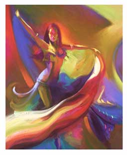
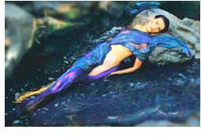

WilyWalnut.com
Meet the Genius in YOUR Brain!
GENIUS HOME - Reader's Questions : Living in the flow... Creative Flow 2:Live Forwards, Not Backwards This article continues the correspondence with Ananda begun in part 1: Creative Flow: Is it possible to enjoy consistent flow states? Here we discuss the importance of 'living forwards', the sense of being fresh and new as you let go and enter the flow of life. (Please refer to part 1, before reading this page.) Ananda writes: From: Ananda Dear Wily, I want to share with you a poem written more than 1500 years ago by a Chinese poet, titled 'The Peach Blossom Spring', the story goes like this-' A fisherman was drifting down a river. He was lost after many forks and turns. He found himself in a beautiful village with peach blossoms everywhere. The people there are beautiful and life is like paradise. They are unaware of the world outside. They showered him with such hospitality. He left at the end of the day and found his way home. After a while he missed that village and journeyed down the river trying to find it, but he never found it again.' I feel it's such a wonderful metaphor of the state of being that we are pondering, which, in your words, 'is about trust' and 'happens when we let go of trying'... Your words remind me so much of the teachings of Abraham-Hicks, whom I feel are some of the greatest teachers on the planet. I really appreciate your profound wisdom and your joyful, loving energy!!! With my best
wishes, Here is my reply: Dear Ananda,  Thank you so much for your kind words and for 'The Peach Blossom Spring' poetic story.It brings to mind something that I was thinking about after replying to your initial email. And that is the ancient Greek philosopher Heraclitus's ideas on flow, change and impermanence...
As children we live forward, moving out into the moment, experiencing life anew. As adults we begin to live backwards, trying to recreate our pleasurable experiences and avoid the potential for unpleasant ones. This is like the man in the story
who misses the village and goes looking for it again. But
the village has gone, he cannot find it anymore, just as we
cannot effectively repeat an experience and get the same
richness from the experience as we had when we were in the
flow.  The rocks in midstream can give us
temporary relief from the surging current of the river of
life. But they are not meant to be island habitations.
That's where the trust comes in. Use your knowledge, yes.
Make the best possible choices, yes. But abandon yourself to
the flow, and trust. A warning if ever there was one!
:-) It's the Baby Mind of the Zen Masters. It's Krishnamurti's insistence on clearing out the old, and looking at things completely afresh to learn, observe and experience without judgements or preconditions. And it's Abraham-Hicks' joyous reaching out expectantly for the good, for the well-being, for the abundant new life that is out there waiting to be relished and enjoyed. Pre-paving the future with positive expectancy and then trustfully abandoning the sides to experience and be in the flow of the wonderful life pouring into each present moment. Onwards and upwards, better and better, Back to: Creative Flow: Is it possible to enjoy consistent flow states? Related Articles The Creative Power of Certainty Creative Renewal: Emptying Your Mind For Creative Renewal
Wily Walnut is the headbrain at http://www.WilyWalnut.com , your top resource for unleashing the genius within, becoming infinitely creative, intelligent and brilliant in all that you do! GENIUS ARTICLES HOME IQ TESTS - CREATIVITY - GENIUS - BRAIN STORMING - SELF-HELP - BRAINTEASERS - WILY WALNUT
| ||
|


"Unleash Your Inner Genius For Creativity & Innovation!" Copyright 2001-2015 WilyWalnut.com SITE MAP